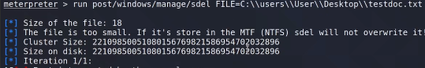

Técnicas de borrado de evidencias una vez explotado el sistema objetivo.
Para realizar esto existen herramientas que no dejan rastro para los análisis forenses.
Linux:
Nos permite borrar el fichero reescribiendo en la zona de memoria donde se encontraba ese archivo.
shred -h
shred -vfz testfile.txt
Elimina un archivo de forma segura.
srm testfile.exe
Windows
:
Mediante meterpreter podemos utilizar un módulo específico para eliminar los archivos de forma segura.
run post/windows/manage/sdel FILE=C:"ruta del fichero"
